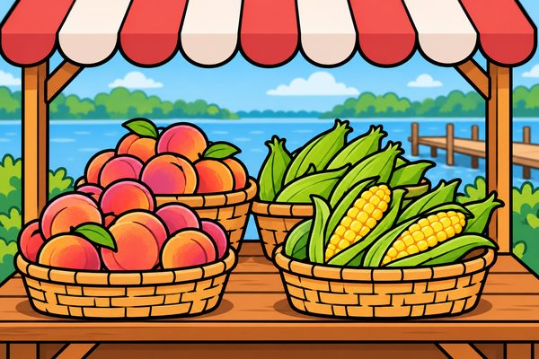
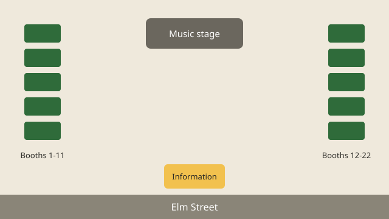

Hilltop Honey
Local
Raw wildflower honey, honeycomb and hand-poured beeswax candles.
Booth 4
Open every Saturday, May to October
8 a.m. to 1 p.m., in the Elm Street parking lot
Bring your own bag. Vendors no longer hand out plastic bags. Reusable bags are $2 at the information tent.
Twenty-two vendors this week. Here are six to start with.
Local
Raw wildflower honey, honeycomb and hand-poured beeswax candles.
Booth 4

Organic
Heirloom tomatoes, sweet corn and the first peaches of the year.
Booth 7
Baked today
Sourdough loaves, cinnamon rolls and gluten-free banana bread.
Booth 9
Sold out for today
Brown and blue eggs from free-range hens. Back next Saturday.
Booth 12
Free samples
Fresh salsa in four heat levels, from Mild to Volcano, and corn chips.
Booth 15
Local
Sunflowers, zinnias and mixed bouquets wrapped in paper.
Booth 18

Parking is free on Oak Avenue. Bikes can lock up at the racks by the entrance.
| Time | What's happening |
|---|---|
| 9:00 a.m. | Cooking demo: summer salsa, with Mesa Verde Salsa |
| 10:30 a.m. | Seed planting for kids, at the information tent |
| 12:00 p.m. | Live bluegrass from the Back Porch Pickers |
The Saturday Farmers Market started in a church parking lot with four tables and a cooler of lemonade. Today it brings more than twenty growers, bakers and makers from within fifty miles of town to one place every week, from the first strawberries in May to the last pumpkins in October.
Every vendor grows, raises, bakes or makes what they sell. Most take cards as well as cash, and the information tent can swap your card for market tokens that work at every booth. Bring the kids, bring a friend, and bring your own bag.